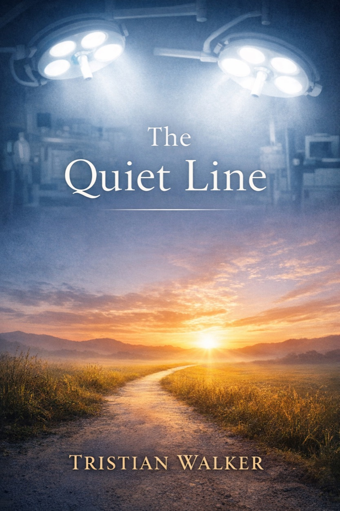
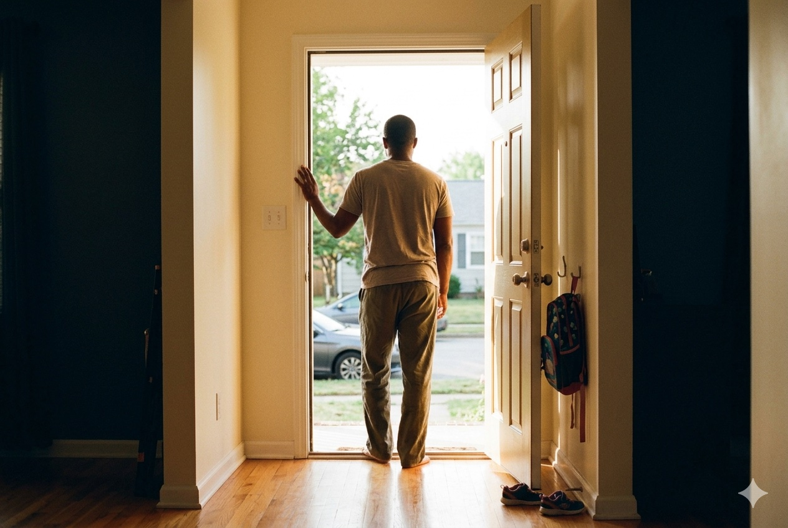

A book for the operator who still shows up — and can't remember the last meeting that moved her. Read it in an evening; spend a season coming back from the line you didn't know you crossed.

"The drift never announces itself. It just arrives one email at a time, one nod in a meeting you didn't actually attend, until the person your calendar describes is no longer the person you meant to be."
There is a quiet line most high-performers cross without noticing. On one side, you are engaged — opinionated, present, trusted. On the other, you are capable but disconnected. Competent, but absent.
This book is not about burnout. It is about drift. And how to come back from it.
How we slowly trade our agency for comfort. Spot the quiet line before it's too late to see it.
Motion is when you are tired. Movement is when you are somewhere new at the end of it.
Natural authority. Disciplined range. The return to the part of you that knew why you started.
One year. Three reckonings. A man confronting who he's become.
The calendar looked full. The suit was pressed. The glass was always within reach. Terrence had everything a man was supposed to want — and somewhere inside all of it, quietly, he stopped being able to feel any of it.
He woke up in a room he did not choose, breathing on a schedule he did not set. Outside the window, the world was still moving. He pressed his hands against the glass and measured the distance.

Return is not a moment. It is a Tuesday morning. An open door. The particular weight of a child's backpack hanging on a hook beside you. Terrence learned that survival was not the reward. What he came back to was.
"A rare book about working life that refuses both the cheerleading and the cynicism. Walker writes the way a good doctor talks — calmly, precisely, and as though he has actually seen the thing he is describing."
"The Quiet Line names a thing most managers have felt and almost none have been willing to write down. It will be in a lot of suitcases this summer."
"I annotated the margins of my galley so aggressively my partner asked who I was fighting with. Page 87 alone is worth the cover price."
"I gave this to three people on my leadership team before it was even bound. Two of them have quietly, productively, changed how they run their departments since."
"There are career books that teach you to perform better. This one asks, more quietly, whether you've forgotten what you were performing for."
"Walker's 'motion versus movement' distinction rewired how I ran my own week inside of 48 hours. I don't say that about many books."
The drift never announces itself. It just arrives one email at a time, one nod in a meeting you didn't actually attend, until the person your calendar describes is no longer the person you meant to be. The first step back is not a new system. It is the small, uncomfortable act of noticing. Sitting with the noticing long enough to name it.
Most of the people I interviewed for this book did not quit. They did not, technically, underperform. They drifted — and then, at some specific Tuesday that they could usually, if I pressed, actually remember, they started to come back.
What follows is not a program. It is the map they drew for me, over coffee, after.
Eleven years of drafts. Forty-seven long-form interviews — hospital chiefs, founders, public-sector program directors, two firefighters, one orchestra conductor. The book reads like a long evening with someone who has been paying close attention and refuses to tell you what to do with it.
"Chapters are short. Margins are wide. Written to be written in."
The 22-page opening chapter, delivered as a PDF to your inbox in under a minute. No follow-up sequence. I value your inbox as much as my own.
Design-system preview — form is not connected to a subscription service.
An evening on professional drift, natural authority, and the character work that holds a career together. Limited seats. One city at a time.
Short-hand conversations. You speak to a ticket number, not a person. Efficiency replaces exchange.
You wait to see the room before you speak. The room, in turn, waits for you. Nobody leads.
You are tired at the end of every week. You are not, however, anywhere new.
Presence. Hospitality. The quiet operating system beneath every "soft skill" we were told not to index on.
The surgical distinction that turns a tired week into a finished one. Disciplined range over frantic reach.
The short, honest reckoning that returns you to the part of you that knew why you started.